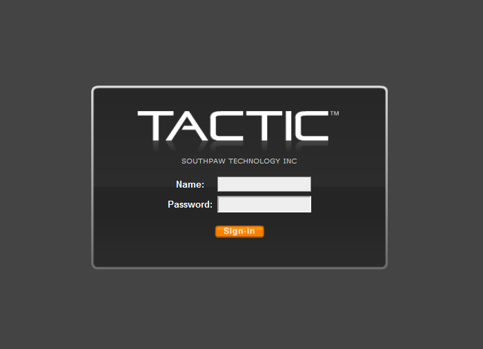

General TACTIC Install
This document guides you through the general installation of TACTIC on any server environment with some brief background information. For installation on Windows or RHEL environment, please refer to the corresponding sections in this book.
To completely install TACTIC, there are five main components that have to be set up in the following order:
-
Database
-
Python
-
Image Utilities
-
TACTIC Installer
-
A Web Server
Install Database
TACTIC stores all metadata in a database, and supports a variety of database types, including:
- PostgreSQL
- MySQL
- SQLServer
- SQLite
The recommended database is PostgreSQL - an industrial strength, hugely scalable database that has proven itself in thousands of industries around the world. This document uses PostgreSQL, although other database types will be available in the Install TACTIC Application section. If you do not see your desired database type listed there, inquire on the community forum.
We currently recommend PostgreSQL 9.6 and upwards for ease of installation. Go to the PostgreSQL website for more information.
-
Install PostgreSQL
-
Edit the file,
/var/lib/pgsql/data/pg_hba.confThis file determines all of the user permissions for PostgreSQL. To begin with, turn on all of the permissions contained in this file. This is a temporary measure that will greatly simplify the installation process. You may lock down these permissions at a later date. Please consult the PostgreSQL documentation on how to do this. TACTIC ships with a sample "pg_hba.conf" file, located in,
$TACTIC_unzipped_package/src/install/postgresql/pg_hba.confThis file has an open security setting for ease of installation. It’s best to back up your current pg_hba.conf file before copying over with the file provided by TACTIC.
-
Restart the PostgreSQL Service
Verification
Verify that psql works in the command prompt:
> psql -U postgres template1
It should give you a prompt:
template1=#
If you see this prompt without the need to enter a password, you have successfully installed the PostgreSQL database. Type \q to exit.
Install Python and supporting modules
Python is a core element of the TACTIC application, along with supporting Python modules
First, you must install Python 2 or 3. Installers are available from the Python website. Python 2 has reached EOL as of January 2020, and it is recommended to start new installations with Python 3. Python 2.7 and 3.7+ are recommended versions for TACTIC.
Second, you must install supporting modules. These modules depend on your version of Python, and your server environment. You must install the version of each module that matches your Python version.
Python 2 Linux modules
- pillow
- lxml
- pycryptodomex
- requests
Python 3 Linux modules
- pillow
- lxml
- pycryptodomex
- requests
- pytz
Python 2 Windows modules
- pillow
- lxml
- pycryptodomex
- requests
- pywin32
Python 3 Windows modules
- pillow
- lxml
- pycryptodomex
- requests
- jaraco.windows
- pytz
- pywin32
You will also need a Python DB connectivity module. For PostgreSQL, use psycopg2 and for MySQL use mysqlclient.
On UNIX/Linux systems, the system package manager typically has options for installing all the required Python packages onto the UNIX host machine.
Install Media Utilities (optional)
Imagemagick and ffmpeg can be used by TACTIC for various asset functions such as icon generation and metadata extraction. Installers are available for both Linux and Windows systems.
Note that these are optional. If ImageMagick is not present, it will use Pillowfor basic image manipulation.
Install TACTIC
Unzip the file in a temporary location.
# cd /tmp
# unzip tactic_#.#.#.#.zip
Go to /tmp/tactic_#../src/install/
cd /tmp/tactic_#.#.#.#/src/install
Execute: install.py
Note
You must invoke the installation with root user privileges because it attempts to write to the <python_install>/site-packages directory.
su
python install.py
The installer will ask a number of questions. First it ask for the <TACTIC_BASE_DIR>:
Please enter the base path of the TACTIC installation:
(/home/apache) ->
Enter the user the Apache Web Server is run under.
Please enter the user Apache Web Server is run under:
(apache) ->
It would copy the source code to the base path and create a symbolic link to it. An Apache Web Server file will be generated at the end which you would need to copy to the Apache config area upon installation of the web server. If there are existing files in the destination directory the installer will ask for your confirmation to remove it. At the end, you will see this:
*** Installation of TACTIC completed at [/home/apache] ***
Next, please install the Apache Web Server and then copy the Apache config extension
[/home/apache/tactic_data/config/tactic.conf] to the Apache web server config area. e.g.
/etc/httpd/conf.d/
Verification
When the installation is completed, an asset directory will be created at '<TACTIC_DATA_DIR>/assets'.
The file tactic_paths.py will be created in the following directories:
Linux
/usr/lib/python#.#/site-packages/tacticenv
Default contents:
TACTIC_INSTALL_DIR='/home/apache/tactic'
TACTIC_SITE_DIR=''
TACTIC_DATA_DIR='/home/apache/tactic_data'
Network Machine Access
If you are on the server, you can access it by using the URL http://localhost/tactic. For other people to access it on the network, you need to find out its IP address. In a linux server, you can use the command "ifconfig" to locate it. It’s the one listed as the inet addr.
Verify the Installation
Go to the "<TACTIC_INSTALL_DIR>/src/bin" folder
Then su as the user tactic and run startup_dev.py:
cd /home/apache/tactic/src/bin
su tactic
python startup_dev.py
This "startup_dev.py" script is the development script which will dump output to the screen. The other startup script "startup.py" is the production start-up script and will dump output to a log file. The development start-up script is also much slower as it monitors the file system to see if any files have changed.
The output would look like the following:
Registering site ... admin
Registering site ... default
Registering site ... test
Registering site ... my_project
Starting TACTIC ...
05/Jul/2007:11:16:29 CONFIG INFO Server parameters:
05/Jul/2007:11:16:29 CONFIG INFO server.environment: development
05/Jul/2007:11:16:29 CONFIG INFO server.log_to_screen: True
05/Jul/2007:11:16:29 CONFIG INFO server.log_file: D:/tactic_temp/log/tactic_log
05/Jul/2007:11:16:29 CONFIG INFO server.log_tracebacks: True
05/Jul/2007:11:16:29 CONFIG INFO server.log_request_headers: True
05/Jul/2007:11:16:29 CONFIG INFO server.protocol_version: HTTP/1.0
05/Jul/2007:11:16:29 CONFIG INFO server.socket_host:
05/Jul/2007:11:16:29 CONFIG INFO server.socket_port: 8081
05/Jul/2007:11:16:29 CONFIG INFO server.socket_file:
05/Jul/2007:11:16:29 CONFIG INFO server.reverse_dns: False
05/Jul/2007:11:16:29 CONFIG INFO server.socket_queue_size: 10
05/Jul/2007:11:16:29 CONFIG INFO server.thread_pool: 5
05/Jul/2007:11:16:30 HTTP INFO Serving HTTP on http://localhost:8081/
http://<TACTIC_server_address>/tactic/admin/
You should see the TACTIC login appear.

At this point, you are successfully running TACTIC!
There is a default user created on installation. This is the "admin" user and this user has the ability to see and change all aspects of the system. Log in as the admin user:
Note
You may be asked to change your password automatically at startup
without entering these default credentials.
user:
adminpassword:
tacticNote
If you have not set up the TACTIC service, refer to the page "Configure the TACTIC Service".
Install Webserver
So far, TACTIC has been run in Debug mode, which is useful for testing and developing on the platform, however, it is not sufficient to run on a production server. For a production server, TACTIC should be run behind a full web server, such as Apache. You can download Apache software at http://www.apache.org/
The TACTIC application server is able to serve up static content such as images, PDF files, Quicktime files, and so on, but it is not the most efficient at this because it is written in Python. This is what Apache is designed for. By running TACTIC behind Apache, it relieves TACTIC from serving the static content so that it can focus on the dynamic content.
For production use, it is highly recommended that TACTIC is run behind the Apache server. This has many scalability advantages. When running behind Apache, Apache uses a reverse proxy and proxy balancer module to forward requests to communicate with TACTIC.
Linux
After the installation, some changes may need to be made in the "httpd.conf" file for Apache.
Fedora Core: /etc/httpd/conf/httpd.conf
Make sure the following lines are uncommented:
LoadModule rewrite_module modules/mod_rewrite.so
LoadModule proxy_module modules/mod_proxy.so
LoadModule proxy_http_module modules/mod_proxy_http.so
LoadModule proxy_balancer_module modules/mod_proxy_balancer.so
LoadModule deflate_module modules/mod_deflate.so
Additional lines For Apache 2.4:
LoadModule slotmem_shm_module modules/mod_slotmem_shm.so
LoadModule filter_module modules/mod_filter.so
LoadModule lbmethod_byrequests_module modules/mod_lbmethod_byrequests.so
These lines may already be uncommented, depending on your distribution and version of Apache. You need Apache version 2.0.31 or later.
The TACTIC installer generates an Apache extension conf file on completion. Copy that file to a directory that is recognized by Apache.
For Fedora Core: copy the TACTIC generate Apache conf extension file to the following directory:
/etc/httpd/conf.d/
If there is no such configuration extension folder, you must add the following line to the "httpd.conf" file so that it will read the extension configuration file provided by the installer:
Include conf/tactic_win32.conf
Web Server configuration
In our provided file:
tactic.conf
Make sure the following lines exist:
# Using the ProxyPass directives
ProxyPreserveHost on
<Proxy balancer://tactic>
BalancerMember http://localhost:8081/tactic
BalancerMember http://localhost:8082/tactic
BalancerMember http://localhost:8083/tactic
</Proxy>
ProxyPass /tactic balancer://tactic
ProxyPass /tactic_data balancer://tactic
For Apache 2.4:
Comment out:
#Order Allow,Deny
#Allow from All
Uncomment:
Require all granted
Note
Warning: For load balancing, only use either:
the Proxy Balancer method (recommended)
orthe RewriteRule method (not recommended).
Do not use both methods at the same time.
Note
For configuring load-balancing set-up in a real production, please refer to the Load Balancing section in the Sys-admin docs.
Note
When trying to set up Apache on a Windows Server, to specify a share folder for Apache to use, you may need to include the name of the share folder in the path.
For example, use the following if you have named the share folder "my_share":
Alias /assets "//10.0.0.17/my_share/assets"
Finally, after verifying the configuration is correct, restart the Apache service:
service httpd restart
Running TACTIC as a Service
First, stop TACTIC running in dev mode if applicable by pressing Ctrl ^ C in that shell
In Linux:
service tactic start
After this, you can validate that the service is running checking the processes.
# ps -ef | grep python
You should see output similar to the follow:
tactic 15609 31059 0 14:28 ? 00:00:02 python /home/tactic/tactic/src/bin/startup.py 8083
tactic 15889 31059 0 14:32 ? 00:00:01 python /home/tactic/tactic/src/bin/startup.py 8082
tactic 16021 31059 0 14:33 ? 00:00:01 python /home/tactic/tactic/src/bin/startup.py 8081
root 31055 1 0 2019 ? 00:00:00 su - tactic -m -c /usr/bin/python /home/tactic/tactic/src/bin/monitor.py
tactic 31059 31055 0 2019 ? 00:01:35 /usr/bin/python /home/tactic/tactic/src/bin/monitor.py
This shows that there are 3 TACTIC processes running on Ports 8081, 8082, 8083 which will be load balanced by Apache.
At this point you will need to install a TACTIC license file and then begin to set up a project.
For more information on installing the license file, please refer to the Install License File chapter.
For more information on getting started with projects, please refer to Setup documentation.